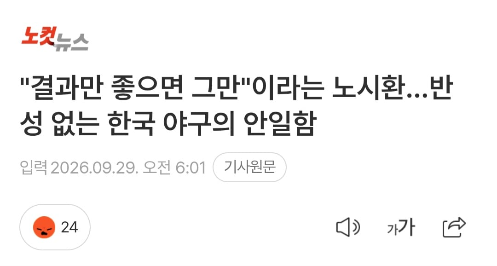
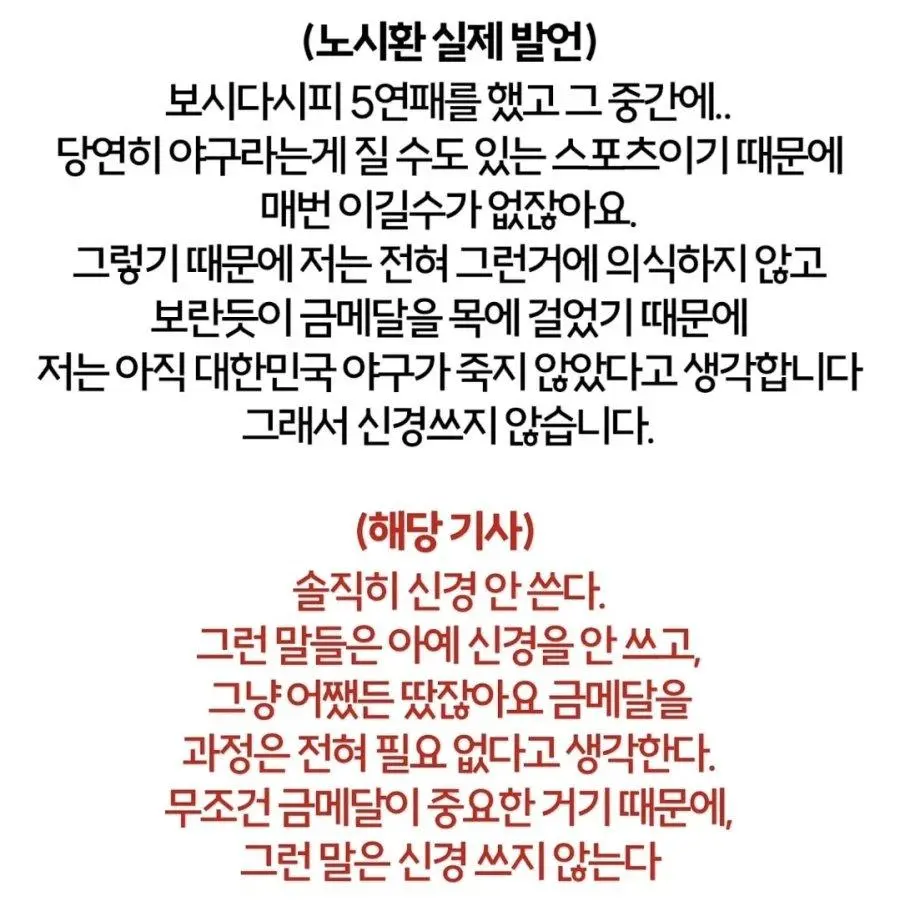

존나 웃긴게 인터뷰 풀버전 공개되고 왜곡인거 까발려져도 내내 노시환 인터뷰 왜곡한걸로 기자들이 풀발해서 기사 양산중ㅋㅋㅋㅋㅋ 대체 노시환이 기자들 단체로 빠따돌리기라도 한건가 왜저러는거야


존나 웃긴게 인터뷰 풀버전 공개되고 왜곡인거 까발려져도 내내 노시환 인터뷰 왜곡한걸로 기자들이 풀발해서 기사 양산중ㅋㅋㅋㅋㅋ 대체 노시환이 기자들 단체로 빠따돌리기라도 한건가 왜저러는거야
그거야 당연히 ㅋㅋㅋ를 줄이라는건 논리랑은 상관없으니까 그렇지
논리가 없어보인다 => 내 감상
ㅋㅋㅋ를 줄여 => 시비조로 싸우지 좀 마라
논리를 지적했으면 그 논리에 대한 얘기가 나오는게 대화의 흐름상 보는 사람이 생각하는 당연한 순서인데
뜬금없이 ㅋㅋㅋ 타령하는게 너가 시비조로 싸우고 싶은것같아서 하는말임
무슨 말인지 이해한다고 생각한다
아오 키보드에서 ‘ㅋ’ 빼버리고 싶노
꼬움?ㅋㅋㄲ
유명한 노엄좌임
렉카 독기 그득한거보소
건빵~~ 건빵~~ 덜컹덜컹 달려간다 입영버스야
그래도 노시환 멘탈 대단해
안무너졌음 좋겠네
307억도 한화에서 주니까 받는건데
노시환만 욕 오지게 먹고
새벽내내 인스타에서 싸우던디?
아 결국 싸우는군
근데 댓글 한번 슥 읽어봤는데 핑딱 게이 논리가 좀 없어보이긴 해... 일단 ㅋㅋㅋ를 좀 줄여
----
위 너가 쓴 말을 보면 사람들이 보면 뭐라고 생각하겠냐
논리가 좀 없어보인다 생각하겠지?